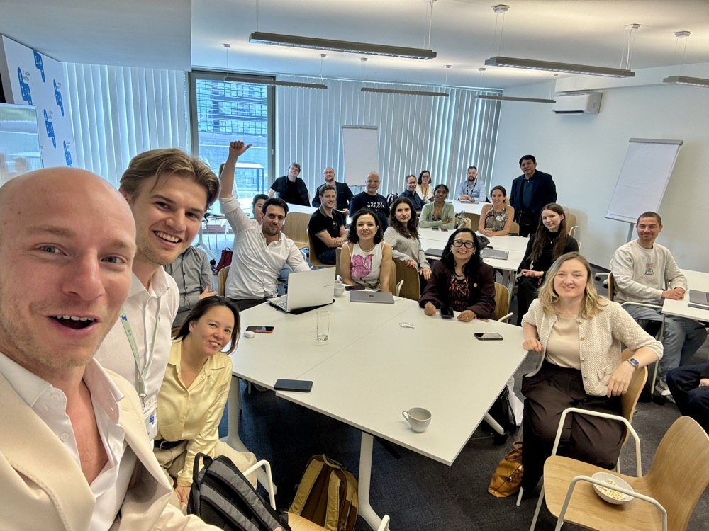
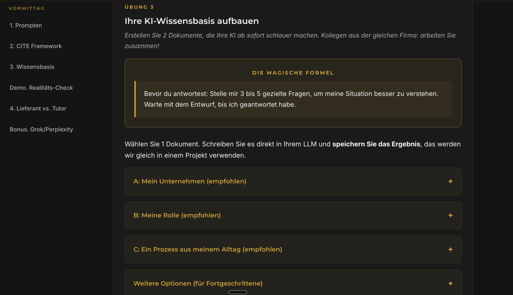

|
Viel Spaß beim Lesen.
Jakub PopluharMaster of Education
KI-Trainer & Konsumentenpsychologe, Implementation Advisor bei BecameAI (TU Wien).
Eine Übersicht meiner Trainingsmodule, als Vorbereitung auf unser Gespräch am 1. September. Damit Sie nicht blind ins Meeting kommen: was ich anbiete, für wen, und was Ihre Teilnehmenden am Ende in der Hand haben.

Drei Stärken.
Pädagogische Ausbildung (M.Ed.) plus psychologischer Hintergrund: das Niveau wird so geführt, dass auch die schwächste Person mitkommt und die erfahrene sich nicht langweilt. Bei Firmengruppen ist genau das der häufigste Bruchpunkt, nicht das Werkzeug.
Genauso präzise in homogenen Gruppen, wenn ich Inhalt und Tiefe vorab genau auf das vorbereite, was ein Unternehmen tatsächlich geliefert haben will.
Ein Training endet nicht am Trainingstag. Ich baue jedes Modul so, dass etwas Nutzbares mitgenommen wird, nicht nur ein Handout über etwas, das gezeigt wurde.

M.Ed. · Ludwig-Maximilians-Universität München & Technische Universität München
Meine Trainings.
Jedes Training halte ich in Präsenz, online und hybrid, auf Deutsch, Englisch und Slowakisch, in der Gruppe und eins zu eins, buchbar als Inhouse-Training und als offenes Seminar. Bis 12 Teilnehmende pro Trainingstag ohne Aufpreis, der Praxisanteil ist der Kern, nicht die Zugabe.
KI-Fundamentals
Die praktische Grundlage der KI-Nutzung: wie Sprachmodelle im Arbeitsalltag wirklich funktionieren, sauberes Prompting und das Erkennen von Grenzen. Ergänzt den bestehenden WIFI-KI-Führerschein, statt mit ihm zu konkurrieren: der Führerschein deckt Chancen, Risiken, Ethik und Datenschutz ab, dieses Modul liefert die Anwendungskompetenz, die die Tool-Workshops (Copilot, Copywriting, Bilderstellung) erst wirksam macht.
- Verstehen, wie ein Sprachmodell wirklich arbeitet, und erkennen typische Fehler wie Halluzinationen
- Schreiben Prompts nach dem CITE(R)-Framework, die verlässliche Ergebnisse liefern
- Kennen das Ampelsystem Grün/Gelb/Rot, um Risiko im Alltag selbst einzuschätzen
- Sind bereit für die WIFI-eigenen Tool-Workshops, weil das Fundament sitzt
KI-Akzeptanz im Team
Von der Schulung zur echten Anwendung. Teams kennen die Tools nach einer Schulung, nutzen sie im Alltag trotzdem kaum. Dieses Modul adressiert Gewohnheiten, Widerstände und Change-Management bei der KI-Einführung, mit meinem psychologischen Hintergrund und der Erfahrung als Implementation Advisor bei BecameAI (TU Wien, Generative KI).
- Verstehen, warum Wissen über ein Tool allein noch keine Nutzung erzeugt
- Identifizieren die konkreten Widerstände im eigenen Team, nicht generische
- Erhalten ein Vorgehen, um KI-Nutzung im Arbeitsalltag zu verankern statt nur zu zeigen
- Nehmen einen Plan mit, wie das nächste Tool-Training tatsächlich hängen bleibt
KI am Schreibtisch
Der Einstieg: wie ein Sprachmodell wirklich arbeitet, das CITE(R)-Framework für verlässliche Prompts, Datenschutz konkret (Drei-Sekunden-Regel), und der Bau eigener KI-Helfer mit NotebookLM und Custom GPTs. Tool-unabhängig, funktioniert mit ChatGPT, Claude oder Gemini.
- Verstehen, wie KI funktioniert, und erkennen typische Fehler wie Halluzinationen
- Schreiben Prompts nach CITE(R), die verlässliche, verwertbare Ergebnisse liefern
- Bauen eigene KI-Assistenten mit NotebookLM und Custom GPTs
- Kennen die Datenschutz-Grundlagen und die 3-Sekunden-Regel
KI im HR-Alltag
Derselbe methodische Kern, zugeschnitten auf Stellenanzeigen, Bewerberkommunikation, Onboarding und Beurteilungen. Modeling of Excellence für die ideale HR-Persona, Human in the Loop bei automatisierten Entscheidungen, Zero Trust gegen gefälschte Lebensläufe.
- Wenden CITE(R) auf Stellenanzeigen und Bewerberkommunikation an
- Nutzen Modeling of Excellence für die ideale HR-Persona
- Setzen Human in the Loop bei automatisierten Entscheidungen bewusst ein
- Erkennen gefälschte Lebensläufe mit einer Zero-Trust-Haltung
Copilot im Arbeitsalltag
Für Häuser mit Microsoft 365: ein Tag direkt in Word, Excel, Teams und Outlook. Wo Copilot zuverlässig ist, wo nicht, und wie er tatsächlich Zeit spart statt nur zu blinken. Baut auf den Grundlagen aus „KI am Schreibtisch" auf.
- Nutzen Copilot gezielt in Word, Excel, Teams und Outlook
- Erkennen, wo Copilot zuverlässig ist und wo nicht
- Bauen auf den Grundlagen aus „KI am Schreibtisch" auf
- Sparen nachweisbar Zeit, statt nur zu blinken
Konsumentenpsychologie im Zeitalter der KI
Die vier Entscheidungsbarrieren, die Käufe verhindern, und wie man sie gezielt auflöst. Dazu die fünf Motivatoren und die Frage, wie KI Kommunikation verstärkt, im Guten wie im Schlechten. Der Satz, um den es geht: KI verstärkt, was man hineingibt.
- Kennen die vier Entscheidungsbarrieren, die Käufe verhindern
- Lösen diese Barrieren gezielt auf, statt nur Motivation draufzusetzen
- Verstehen, wie KI Kommunikation verstärkt, im Guten wie im Schlechten
- Lernen im Intensiv-Format zusätzlich die fünf Motivatoren kennen
Eins zu eins, für Führungskräfte
Für Führungskräfte, C-Level und Schlüsselmitarbeitende, deren Arbeitstag zu eigen ist, um ihn in einer Gruppe sinnvoll abzubilden. Keine Demo, sondern eine Arbeitssitzung: die Person arbeitet an den eigenen, echten Aufgaben.
- Arbeiten an den eigenen, echten Aufgaben statt an einer Demo
- Bauen ein eigenes KI-Projekt mit persönlichen Instruktionen
- Erhalten das Lehrgerüst Wer, Was, Wie für jede künftige Aufgabe
- Gehen mit einem sofort nutzbaren Ergebnis aus der Session
Maßgeschneiderte Trainings
Kein Standardprogramm von der Stange: Inhalt, Tiefe und Werkzeug abgestimmt auf das, was Ihr Haus tatsächlich braucht, egal ob Branche, Vorwissen oder Thema, vom Einstieg bis Advanced für bereits fortgeschrittene Teams.
- Inhalt, Tiefe und Werkzeug exakt auf Ihr Haus abgestimmt
- Von Einstieg bis Advanced für bereits fortgeschrittene Teams
- Unabhängig von Branche oder Vorwissen
- Gemeinsam entwickelt im Vorgespräch
Die eigene Lernumgebung zum Training.
Jedes Training läuft mit einer eigenen interaktiven Begleitseite, kein PDF mit Notizen, sondern eine Arbeitsumgebung, in der Teilnehmende während des Kurses selbst arbeiten und auf die sie danach weiter zugreifen können. Genau hier zeigt sich auch die heterogene Gruppe in der Praxis, nicht nur als Anspruch: jede Übung hat empfohlene Einstiege für unterschiedliche Vorerfahrung, plus eine eigene Option für Fortgeschrittene.
- Kein Rundflug über Folien: Teilnehmende arbeiten live an ihren eigenen Aufgaben
- Übungen mit empfohlenen Einstiegen A, B, C, je nach Vorerfahrung, plus „Weitere Optionen (für Fortgeschrittene)"
- Bleibt nach dem Training online, als Nachschlagewerk für das eigene Tempo

Ausschnitt aus einer Trainings-Begleitseite: eine Übung, drei empfohlene Einstiege je nach Vorerfahrung, plus eine eigene Option für Fortgeschrittene.
Beruflicher Werdegang.
Berufserfahrung
- Workshops und Vorträge zu digitalen Tools und KI-Anwendungen im Berufsalltag, auf Auftragsbasis
- Auftraggeber unter anderem ARS Akademie, tecTrain, SPORTUNION Wien
- Sport- und Englischunterricht, Unterrichtsvorbereitung und Klassenführung
- Online- und Präsenz-Workshops zur Konsumentenpsychologie
- Aufbau von Lizenzierungs- und Zertifizierungsprogrammen
- Event-Management und Projektmanagement für Trainingscamps und Events, 5 Jahre in Folge größtes Roundnet-Trainingslager der Welt, Content-Erstellung, Podcast
- Entwicklung einer Coaching-App (iOS & Android)
- Reisebegleitung von Seniorengruppen in den Zieldestinationen
Ausbildung
Sprachen & Kenntnisse
Interessen
Wo ich bereits trainiere.


Lass uns zusammen in die KI-Welt springen.
Termin buchen →PS: Es läuft nicht alles sauber oder fehlerfrei, aber genau darum geht es auch nicht. Stabilisierung ist die eigentliche Fähigkeit, bei KI genauso wie beim Sprung.